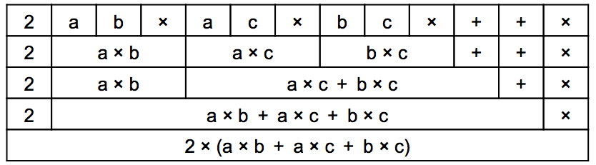

ビ太郎は「（a＋b）×2」のようなカッコのある数式が嫌いです。
ある日、計算する値の後に＋,−,×,÷などの記号を書くと，カッコを使わなくても式を書けることを発見しました。
たとえば，「（a＋b）×２」という式は，（aとbを足したものに2をかけるという意味で）「a b ＋ 2 ×」と書きます。
また、「2×（a＋b）」という式は，（2にaとbを足したものをかけるという意味で）「2 a b ＋ ×」と書きます。
カッコを使わない式を普通の式に戻すときは，「2つの値に続く記号」を普通の式に戻すことを繰り返します。
たとえば「2 a b ＋ ×」という式は，下の図のように最初に「a b ＋」の部分を「a＋b」に戻し，2にその結果をかけることで「2×（a＋b）」という式に戻すことができます。
ビ太郎は「2 ×（a × b ＋ a × c ＋ b × c）」という式をカッコを使わないで書きたいと思いました。
この式と同じ式を表しているのはどれでしょうか？
